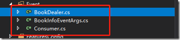

刚开始工作的时候，觉得委托和事件有些神秘，而当你理解他们之后，也觉得好像没有想象中的那么难。在项目中运用委托和事件，你会发现他非常棒，这篇博文算是自己对委托和事件的一次梳理和总结。
二、委托
C#中的委托，相当于C++中的指针函数，但委托是面向对象的，是安全的，是一个特殊的类，当然他也是引用类型，委托传递的是对方法的引用。
2.1、delegate
声明委托就必须使用关键字“delegate”，委托是先声明，后实例化。至少0个参数，至多32个参数
格式如下所示：
private delegate string GetAsString();委托是一个类，所以他的实例化跟类的实例化一样，只是他总是接受一个将委托方法作为参数的构造函数。调用委托方法就有两种方式，如下所示：
int i = 10;
var method = new GetAsString(i.ToString);
//调用方法一
Console.WriteLine($"method方法{method()}");
//调用方法二
Console.WriteLine($"method.Invoke方法{method.Invoke()}");
运行结果：
{kind=link}
2.2、Action
Action是无返回值的泛型委托，可以接受0个至16个传入参数
Action 表示无参，无返回值的委托
Action<int,string> 表示有传入参数int,string无返回值的委托
前面我们【Log4Net 日志记录的实现】中，就使用了Action。如：
public static void Debug(string message, Action RegistedProperties)
{
RegistedProperties();
log.Debug(message);
}调用方式为：
PFTLog.Debug("测试扩展字段", () => {
LogicalThreadContext.Properties["LogType"] = "扩展字段内容";
});
在运行中，直接运行Action中的内容即可。
2.3、Func
Func是有返回值的泛型委托，可以接受0个至16个传入参数
Func<int> 表示无参，返回值为int的委托
Func<object,string,int> 表示传入参数为object, string 返回值为int的委托
public static decimal GetTotal(Func<int, int, decimal> func, int a, int b)
{
return func(a, b);
}
调用方式
var total = GetTotal((a, b) => { return (decimal)a + b; }, 1, 2);
Console.WriteLine($"结果为{total}");
运行结果
{kind=link}
2.4、predicate
predicate 是返回bool型的泛型委托，只能接受一个传入参数
predicate<int> 表示传入参数为int 返回bool的委托
定义一个方法：
public static bool FindPoints(int a)
{
return a >= 60;
}定义Predicate委托
Predicate<int> predicate = FindPoints;调用
var points = new int[] {
10,
50,
60,
80,
100 };
var result = Array.FindAll(points, predicate);
Console.WriteLine($"结果为{string.Join(";", result)}");运行结果
{kind=link}
2.5、多播委托
前面的只包含了一个方法的调用，委托可以包含多个方法，这种委托就叫做多播委托。多播委托利用“+=”和“-+”两种运算符进行添加和删除委托。
先定义两个方法
public static void MultiplyByTwo(double v)
{
double result = v * 2;
Console.WriteLine($"传值：{v}；MultiplyByTwo结果为{result}");
}
public static void Square(double v)
{
double result = v * v;
Console.WriteLine($"传值：{v}；Square结果为{result}");
}然后调用
Action<double> operations = MultiplyByTwo;
operations(1);
operations += Square;
operations(2);
运行结果：
{kind=link}
三、事件
事件是基于委托，为委托提供一种发布/订阅机制，声明事件需要使用event关键字。
发布者（Publisher）：一个事件的发行者，也称作是发送者（sender），其实就是个对象，这个对象会自行维护本身的状态信息，当本身状态信息变动时，便触发一个事件，并通知说有的事件订阅者；
订阅者（Subscriber）：对事件感兴趣的对象，也称为Receiver，可以注册感兴趣的事件，在事件发行者触发一个事件后，会自动执行这段代码
是不是看到sender，就有种很熟悉的感觉！！！先不忙着急，我们先看下事件的声明和使用
有这样一个应用场景，如果系统有异常，需要及时的通知管理员。那么需要在我们的日志记录里面添加通知管理员的功能，但是问题来了，该怎么通知管理员呢？至少现在无法知道。所以我们就需要在使用到事件。
添加代码如下，如果不知道日志功能的可以参考【Log4Net 日志记录的实现】
//声明一个通知的委托
public delegate void NoticeEventHander(string message);
//在委托的机制下我们建立以个通知事件
public static event NoticeEventHander OnNotice;调用方式
public static void Debug(string message, Action RegistedProperties)
{
RegistedProperties();
log.Debug(message);
//执行通知
OnNotice?.Invoke($"系统异常，请及时处理，异常信息：{message}");
}
在引用场景的代码，先定义一个通知管理员的方法（这里我们直接Console.WriteLine出来）
public static void Notice(string message)
{
Console.WriteLine($"通知内容为{message}");
}先注册，然后触发异常消息
//注册方式一
PFTLog.OnNotice += Notice;
//注册方式二
//PFTLog.OnNotice += new PFTLog.NoticeEventHander(Notice);
PFTLog.Debug("测试扩展字段", () => {
LogicalThreadContext.Properties["LogType"] = "扩展字段内容";
});
运行结果
{kind=link}
这里面我只需要定义好发布者，你可以以任何方式订阅，是不是很非常简单。
弄明白了上面的事件，我们在来说说.Net经常出现的object sender和EventArgs e
.Net Framework的编码规范：
一、委托类型的名称都应该以EventHandler结束
二、委托的原型定义：有一个void返回值，并接受两个输入参数：一个Object 类型，一个 EventArgs类型(或继承自EventArgs)
三、事件的命名为 委托去掉 EventHandler之后剩余的部分
四、继承自EventArgs的类型应该以EventArgs结尾
现在我们以一个新书发布的自定义事件为例
创建对应的类文件：
{kind=link}
事件者发布代码：
public class BookInfoEventArgs : EventArgs
{
public BookInfoEventArgs(string bookName)
{
BookName = bookName;
}
public string BookName { get; set; }
}
public class BookDealer
{
//泛型委托，定义了两个参数，一个是object sender,第二个是泛型 TEventArgs 的e
//简化了如下的定义
//public delegate void NewBookInfoEventHandler(object sender, BookInfoEventArgs e);
//public event NewBookInfoEventHandler NewBookInfo;
public event EventHandler<BookInfoEventArgs> NewBookInfo;
public void NewBook(string bookName)
{
RaiseNewBookInfo(bookName);
}
public void RaiseNewBookInfo(string bookName)
{
NewBookInfo?.Invoke(this, new BookInfoEventArgs(bookName));
}
}
事件订阅者
public class Consumer
{
public Consumer(string name)
{
Name = name;
}
public string Name { get; set; }
public void NewBookHere(object sender, BookInfoEventArgs e)
{
Console.WriteLine($"用户：{Name},收到书名为：{ e.BookName}");
}
}
事件订阅和取消订阅
var dealer = new BookDealer();
var consumer1 = new Consumer("用户A");
dealer.NewBookInfo += consumer1.NewBookHere;
dealer.NewBook("book112");
var consumer2 = new Consumer("用户B");
dealer.NewBookInfo += consumer2.NewBookHere;
dealer.NewBook("book_abc");
dealer.NewBookInfo -= consumer1.NewBookHere;
dealer.NewBook("book_all");
运行结果
{kind=link}
经过这个例子，我们可以知道Object sender参数代表的是事件发布者本身，而EventArgs e 也就是监视对象了。深入理解之后，是不是觉得也没有想象中的那么难了。
四、总结
这里我们讲了委托和事件，在.Net开发中使用委托和事件，可以减少依赖性和层的耦合，开发出具有更高的重用性的组件。